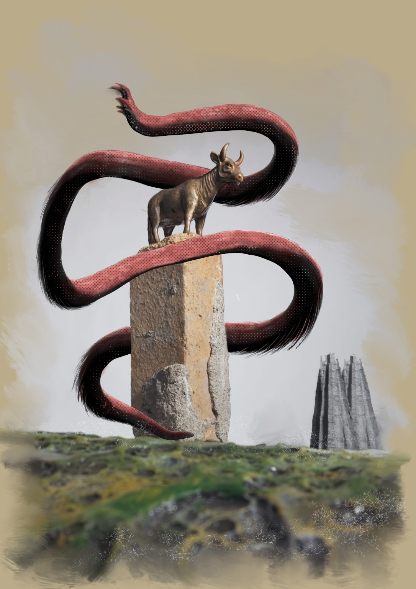
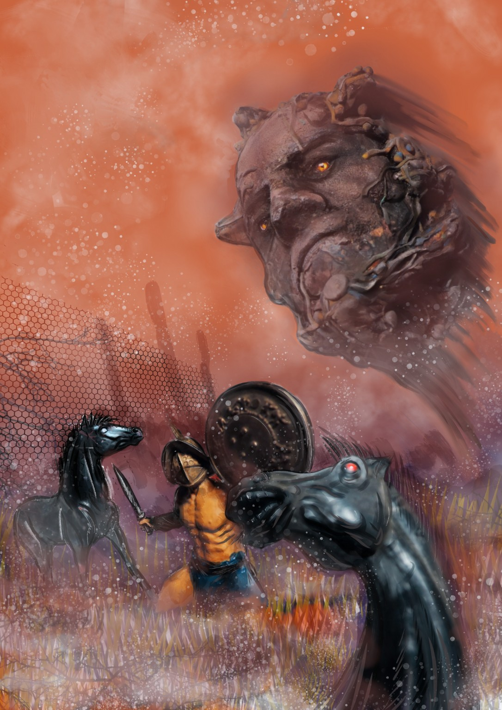
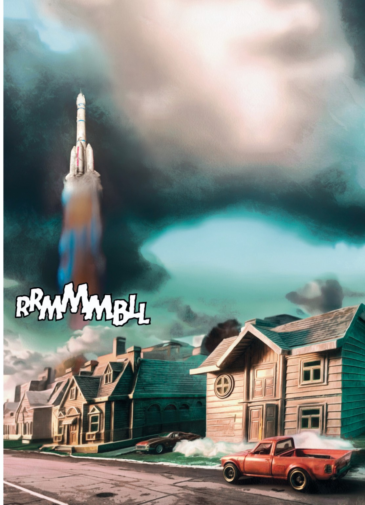

01 / SÍMBOLOS
El becerro
Una figura que reaparece entre los restos de mundos imposibles.

UNA NOVELA GRÁFICA · UNIVERSO EN CONSTRUCCIÓN
Cuando las estrellas dejan de nacer, la materia comienza a recordar otras formas de vida.
EXPLORAR EL UNIVERSO ↘UN VIAJE HACIA EL FINAL DE LAS POSIBILIDADES
Las galaxias se han vuelto silenciosas. Nadie recuerda cuándo nació la última estrella. En la Tierra, las señales de una transformación imposible comienzan a alterar la vida y la memoria.
Un viajero deberá encontrar al Príncipe Robot y descubrir por qué sus registros no coinciden. Su búsqueda lo conducirá a ciudades en ruinas, mundos extraños y al umbral de una existencia que espera ocupar el lugar de la vida.
Texto de presentación provisional · editable en index.html
 EL MUNDO DESPUÉS DEL MUNDO
EL MUNDO DESPUÉS DEL MUNDOUna travesía fragmentada entre el espacio, la Tierra y las formas que emergen después de la vida. Los títulos y textos son propuestas editables.

«La materia había agotado sus combinaciones. Lo que llegó después no era muerte: era otra manera de existir».FRAGMENTO NARRATIVO PROVISIONAL

Una figura que reaparece entre los restos de mundos imposibles.

Presencias surgidas donde las antiguas leyes ya no bastan.

La vida cotidiana persiste ante señales que llegan del cosmos.
Selecciona una imagen para verla en grande. Las ilustraciones se conservan sin intervenciones.
UNA OBRA EN TRANSFORMACIÓN
El universo visual de Horizonte Temporal se construye a partir de ilustraciones, figuras modeladas, escenografías y procesos de composición digital. Cada imagen puede ser revisitada, intervenida y transformada.
Esta web es un archivo vivo del proyecto: una invitación a recorrer su imaginario antes de entrar en las páginas del cómic.
Texto editorial provisional, sujeto a revisión.


HORIZONTE TEMPORAL · UNIVERSO VISUAL EN DESARROLLO
VOLVER AL INICIO ↑